Controller-Aware Audition Matrix¶
Record
Record as of 2026-04-22. A point-in-time document; it is not kept up to date.
Date: 2026-04-22 Stream: B (operational) Charter: two-stream-methodology-charter-2026-04-22.md Sources: EXP-2812 (recovery), EXP-2831 (wear), EXP-2843 (envelope coupling), EXP-2844 (phenotype split), EXP-2845 (route hypothesis), EXP-2845b (unified triage), EXP-2845c (time-of-day), EXP-2846 (SMB capability)
Why this matrix exists¶
Across the EXP-2843 → EXP-2846 line we established that profile audition recommendations cannot be expressed as a single rule per patient. The operationally correct profile edit depends on four factors:
- Controller (Loop / Trio / OpenAPS) — software design
- SMB capability (enabled / disabled) — per-patient configuration
- Phenotype (up_shift / flat / down_shift) — observed S1 response
- Time-of-day window (overnight / dawn / midday / evening)
Same envelope demand → same total compensation (EXP-2845, p=0.82) → opposite delivery routes → different schedule edits required.
This doc compiles the operational matrix.
Layer 1: Controller × SMB capability is configuration not biology¶
EXP-2846 finding (28 patients):
| Controller | SMB-disabled | SMB-enabled |
|---|---|---|
| Loop | 2 | 7 |
| OpenAPS | 4 | 3 |
| Trio | 0 | 12 |
SMB capability crosses controller lines. EXP-2845's "5/5 OpenAPS show zero SMB share" was a cohort artifact (the 5 EXP-2843-significant OpenAPS patients all had SMB disabled). Reality: capability is a per-patient configuration choice, must be checked first.
Layer 2: Route choice depends on (controller, SMB capability)¶
EXP-2845: Loop and Trio deliver identical total insulin compensation in S1 (Δ=0.254 U/h both, p=0.82) but route oppositely.
| (controller, SMB capability) | S1 response route | What audition data shows |
|---|---|---|
| Loop, SMB-disabled | basal-up only | actual basal > scheduled basal in S1 |
| Loop, SMB-enabled | mixed (basal + auto-bolus) | both increase together |
| Trio, SMB-enabled (uniform) | basal-down + SMB | actual basal < scheduled in S1; SMB count rises |
| OpenAPS, SMB-disabled | basal-up only | same as Loop SMB-disabled |
| OpenAPS, SMB-enabled | route varies by tuning | check both basal and SMB |
Implication: if you are reading audition data from a SMB-disabled patient, the only signal of demand is the basal gap. For SMB-enabled patients, ignoring SMB count under-estimates demand.
Layer 3: Phenotype × time-of-day localizes the schedule edit¶
EXP-2845c (median Δbasal % S1 − S0):
| Phenotype | Overnight | Dawn | Midday | Evening |
|---|---|---|---|---|
| down_shift | −9% | −15% | −13% | −5% |
| up_shift | +6% | +7% | +11% | +11% |
| flat | −2% | −3% | −1% | +2% |
The audition matrix¶
For each (controller, SMB-capability, phenotype) cell, the recommended schedule edit + investigation flag:
Loop — SMB disabled¶
| Phenotype | Profile edit recommendation | Window priority |
|---|---|---|
| up_shift | Raise scheduled basal; controller has no other route | midday + evening first |
| flat | Investigate: controller adapting basal but BG not improving — likely insulin-action issue (wear / ISF / site) | check site-age and ISF separately |
| down_shift | Rare; check for incorrectly high scheduled basal at specific hours | dawn first |
Loop — SMB enabled¶
| Phenotype | Profile edit | Window priority |
|---|---|---|
| up_shift | Raise scheduled basal and verify auto-bolus thresholds are not too restrictive | midday + evening |
| flat | Loosen automatic bolus settings; controller capable but constrained | (any) |
| down_shift | Lower scheduled basal | dawn |
Trio — SMB enabled (the cohort-default case)¶
| Phenotype | Profile edit | Window priority |
|---|---|---|
| down_shift (5/6 Trio) | Lower scheduled basal; controller already cutting routinely | dawn (-15%) and midday (-13%) |
| up_shift (1/6 Trio) | Raise scheduled basal here; SMB plus basal-up suggests under-basaled profile | midday + evening |
| flat | (n=0 Trio in cohort) | — |
OpenAPS — SMB disabled¶
| Phenotype | Profile edit | Window priority |
|---|---|---|
| up_shift | Raise scheduled basal | midday + evening |
| flat | Same as Loop-flat: insulin-action investigation (wear / site / ISF) | check site-age |
| down_shift | Lower scheduled basal | dawn |
OpenAPS — SMB enabled¶
| Phenotype | Profile edit | Window priority |
|---|---|---|
| up_shift | Raise scheduled basal AND review oref0 SMB caps | midday + evening |
| down_shift | Lower scheduled basal | dawn |
| flat | Both basal-cap and SMB-cap may be limiting compensation | (any) |
Triage priority (combined with EXP-2812/2831 flags)¶
Highest-confidence intervention candidates (cross-tab from EXP-2845b):
| Patient | Controller | Phenotype | SMB | Triage flags | Recommendation |
|---|---|---|---|---|---|
| b | Loop | flat | enabled | 3 (recovery + post_high + wear) | Site rotation + ISF re-audit. Highest priority. |
| ns-d444c120c23a | Trio | down_shift | enabled | 2 | Lower dawn basal; site change soon |
| ns-dde9e7c2e752 | Trio | up_shift | enabled | 2 | Raise midday/evening basal; investigate wear-pos |
| ns-6bef17b4c1ec | Trio | down_shift | enabled | 1 (wear) | Site change |
| i | Loop | up_shift | enabled | 1 (wear) | Site change + raise basal |
Open follow-ups¶
- EXP-2843b: re-test envelope coupling at 24h windows (faster audition).
- Back-fill EXP-2812 transition data for the 4 flat patients without transition coverage (looser n_trans criterion). [EXP-2848] DONE: EXP-2848. Loosening n_trans≥1 added only 1 non-flat patient. The 4 uncovered flat patients have outcomes that genuinely do not meet triage thresholds — coverage gap is a real-data property, not a methodological limit.
- Stream A sensor-gap orthogonal test still open.
- Wear-positive vs wear-negative deeper drilldown (cohort_site_age_heatmap).
- The flat-low-recovery patients deserve explicit ISF re-audit (cross-cluster experiment to be designed). DONE: EXP-2847.
Visualizations (Charter V8 — every research line gets a paired chart)¶
Phenotype split (EXP-2844)¶
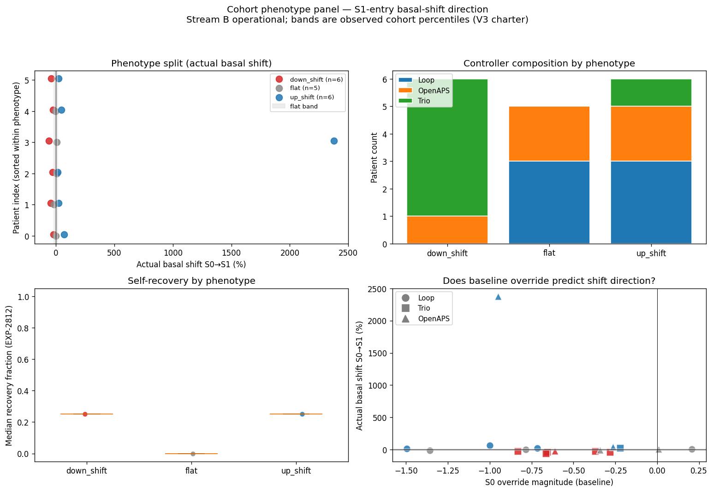
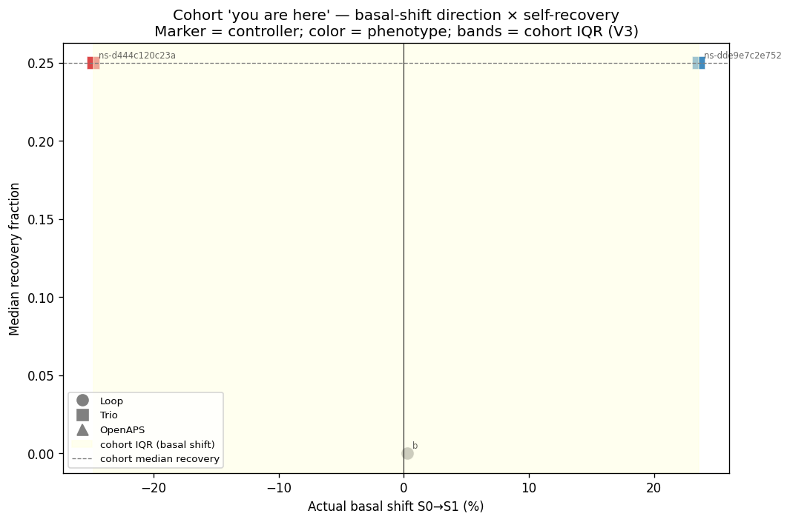
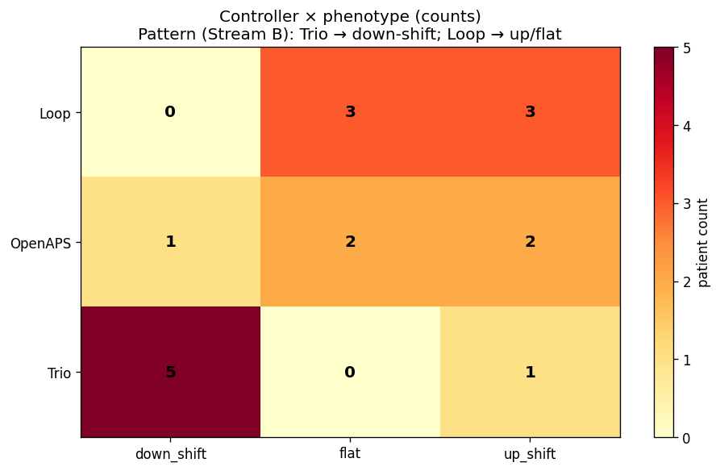
Route hypothesis (EXP-2845)¶
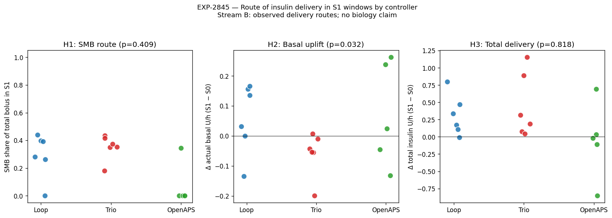
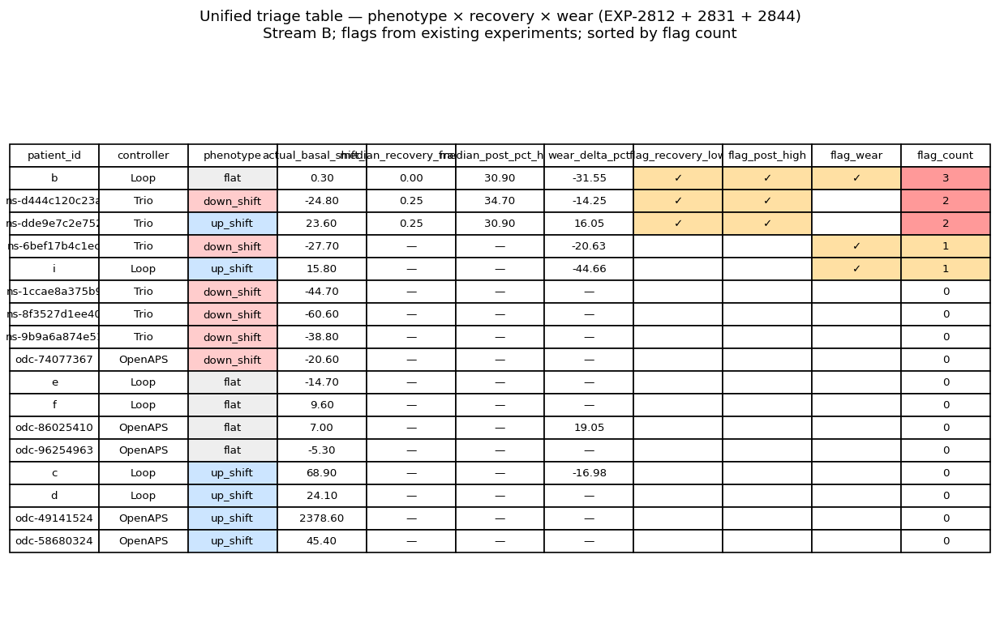
Time-of-day localization (EXP-2845c)¶
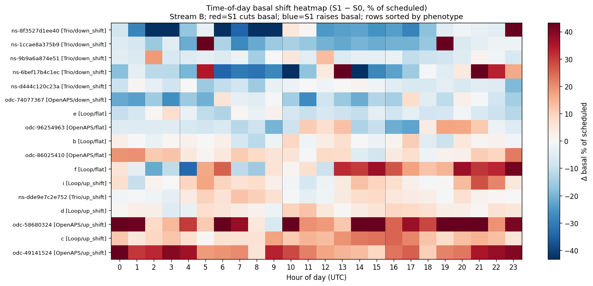
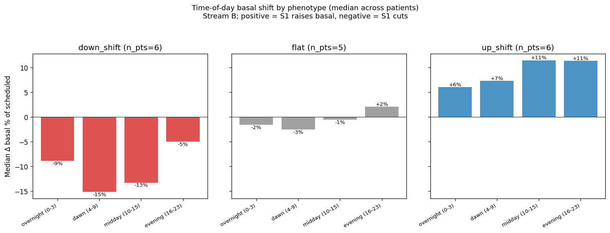
SMB capability audit (EXP-2846)¶
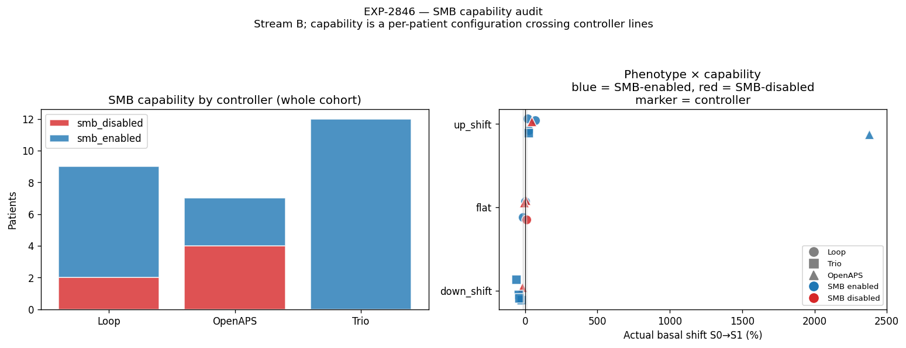
Recovery-by-controller cohort (V7 cohort pairing)¶
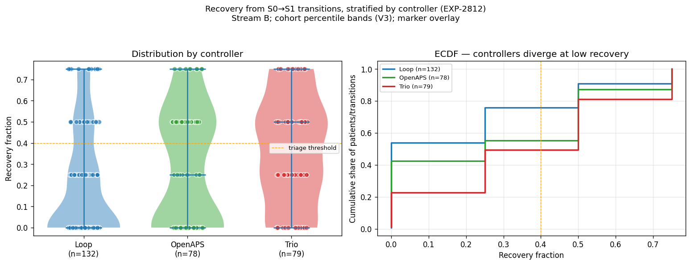
Site-age heatmap (V7)¶
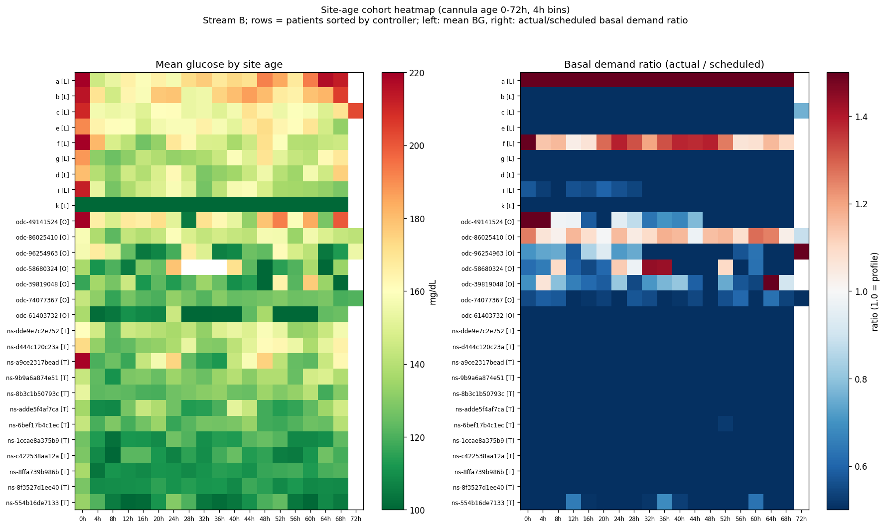
Correction-ISF audition (EXP-2847)¶
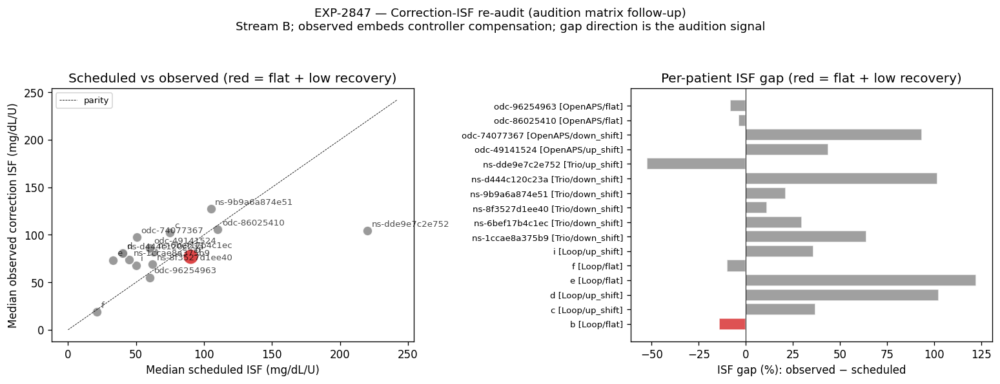
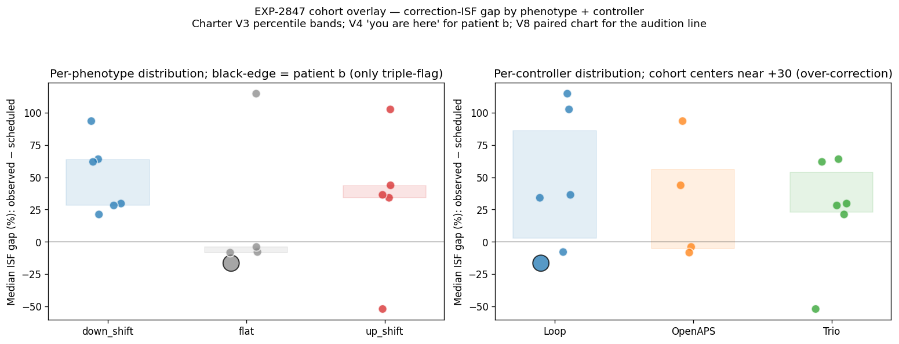
Charter compliance¶
This matrix is Stream B. No biology numbers asserted. All recommendations are operational profile edits derived from observed profile-vs-actual gaps. Cohort triage flags are reproducible from the existing experiment outputs.